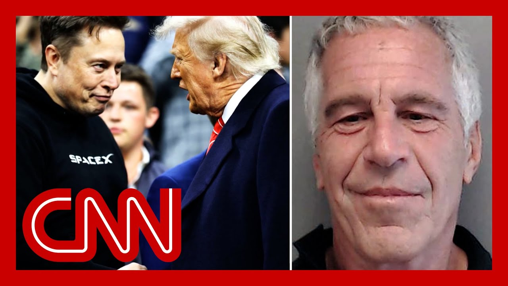

【马斯克声称特朗普“出现在爱泼斯坦文件中”】
Summary: The relationship between Trump and Musk has deteriorated rapidly, with Musk accusing Trump of being in the Epstein files without evidence, implying Trump's involvement with Jeffrey Epstein, while Trump and Musk exchange public insults over policy and personal grievances.
摘要： 特朗普与马斯克的关系迅速恶化，马斯克在无证据的情况下指控特朗普出现在爱泼斯坦文件中，暗示其与杰弗里·爱泼斯坦有关联，同时两人因政策和私人恩怨公开互相攻击。

⏱️ Estimated Reading Time: 14 min
📚 高考3500生词 📚 雅思生词 📚 托福生词 📚 GRE生词 📚 UP主推荐生词
The relationship between President Donald J. Trump and billionaire Elon Musk, has so rapidly disintegrated that Musk, without evidence, is now accusing President Trump of being in the as yet unreleased or as yet released, Epstein files.
美国总统唐纳德·J·特朗普与亿万富翁埃隆·马斯克的关系迅速恶化，以至于马斯克在无证据的情况下指控特朗普出现在尚未公开或已公开的爱泼斯坦文件中。
Musk tweeted this afternoon, quo time to drop the really big bomb Donald Trump is in the Epstein f That is the real reason they have not been made public. Have a nice day JW.
马斯克今天下午发推称，“是时候投下重磅炸弹了——唐纳德·特朗普出现在爱泼斯坦文件中，这才是文件未公开的真正原因。祝愉快，JW。”
T this clean claim, which CNN can not confirm of course, would imply that Trump was in some way name dropped in the case surrounding, Jeffrey Epstein, the notorious and convicted pedophile who died by suicide in prison in while awaiting his federal sex trafficking trial.
这一未经证实的说法（CNN当然无法核实）暗示特朗普以某种方式被提及在与杰弗里·爱泼斯坦相关的案件中。爱泼斯坦是臭名昭著且已被定罪的恋童癖者，在等待联邦性交易审判期间于狱中自杀身亡。
The accusation from Musk is about as nasty as it gets, accusing somebody of being a ped and then covering it up.
马斯克的指控极其恶劣，直接指控某人是恋童癖并掩盖事实。
Mr. Musk did not detail how he would what was or what was not inside any unreleased filings related to Epstein.
马斯克未详细说明他如何知道未公开的爱泼斯坦相关文件中是否包含特朗普的信息。
Assuming there are unreleased files related to Epstein, CNN's reached out to the white House for a response. We have not got one yet.
假设存在未公开的爱泼斯坦相关文件，CNN已联系白宫寻求回应，但尚未收到答复。
Musk also knows that for years, conservatives and right wing figures have sugg that the U.S. government is hiding secrets, bipartisan secrets Democrats and Republicans relating to Jeffrey Epstein and these supporters of Mr. Trump have long been clamoring for the government to more of the files.
马斯克也清楚，多年来保守派和右翼人士一直声称美国政府隐藏着与爱泼斯坦相关的两党秘密，特朗普的支持者长期呼吁政府公开更多文件。
Trump, who was friends with Epstein decades ago, decades ago, talked on the campaign trail about potentially releasing more files on Epstein.
特朗普数十年前曾与爱泼斯坦是朋友，在竞选期间曾提及可能公开更多爱泼斯坦相关文件。
We need to back up for a moment, and explain how we got to this particular friendship graveyard.
我们需要回溯一下，解释这段友谊如何走向破裂。
Given that just six days ago when Mellon, Mr. Musk, Elon Musk left his role, as an advisor to the president and head of the Department of Government Efficiency, or Dog President Trump gave Musk the ke to the white House a ceremonial golden key.
就在六天前，马斯克辞去总统顾问和政府效率部（DOG）负责人职务时，特朗普还赠予他象征性的白宫金钥匙。
Trump may now be changing the lo as this feud today essentially escalated publicly in real time while in the Oval Office with the German chancellor this A reporter asked President Trump about Musk recently criticizing, viciously criticizing the so-called one big beautiful Elon had been calling on Congres to, quote, kill the bill, saying it adds too much to the d
如今特朗普可能正在改变态度，因为这场争执在今天与德国总理会晤时公开升级。记者询问特朗普对马斯克近期猛烈批评所谓“一揽子法案”的看法，马斯克呼吁国会“扼杀该法案”，称其增加了过多债务。
So here's what President Trump first said today about Elon's bill bashing. Just before noon eastern time. I've always liked Elon, and it's always very surprised. I'd rather have him criticize me than the bill, because the bill is incredible.
以下是特朗普今天对马斯克抨击法案的首次回应（东部时间近中午）：“我一直喜欢埃隆，但也很惊讶。我宁愿他批评我而非法案，因为这法案很棒。”
So the president went on, to talk about other subjects and, you know, be careful what you ask for when he I'd rather have him criticize me than the bill.
总统随后转向其他话题，并提醒“当我说‘宁愿他批评我’时要小心”。
The president went on to talk about other subjects eve doing the we've the proverbial we've back to the subject of Elo
总统继续讨论其他议题，但最终又回到埃隆的话题。
So this was at around 12:06 p.m. eastern. I'm very disappointed because Elon knew the inner workings of this bill better than almost anybody sitti better than you people. He knew everything about it. He had no problem with it. All of a sudden he had a problem And he only developed the proble when he found out that we're goi have to cut the EV mandate.
东部时间约12:06，特朗普表示：“我非常失望，因为埃隆比在座任何人都更了解该法案的内情。他原本毫无异议，直到发现我们将削减电动汽车强制令。”
The EV mandate, the electric vehicle mandate. Obviou Musk owns Tesla, which is a premier electric vehicle compa but it turns out Mr. Musk. Elon Musk was watching that and he didn't let that one go un
“电动汽车强制令”——显然马斯克的特斯拉是顶级电动车公司。而马斯克听到后立即反击。
13 minutes after President Trump said that, Musk posted, quote, whatev keep the EV solar incentive cuts in the bill even though no oil and gas subsidies are attached. Very unf But ditch the mountain of disgus pork in the bill.
特朗普发言13分钟后，马斯克发帖：“保留法案中对电动车和太阳能的补贴削减（尽管未涉及油气补贴）没问题，但应剔除其中大量令人作呕的猪肉条款。”
In the entire history of civiliz there has never been legislation that that both big and beautiful Everyone knows this. Either you get a big and ugly bi or a slim and beautiful Bill. Slim and beautiful is the way.
“文明史上从未有过既庞大又完美的法案。要么庞大而丑陋，要么精简而完美——后者才是正道。”
As President Trump continued taking questions at the white Ho Elon Musk. Reposts at 12:25 p.m., the very clip where Trump says Musk only had a problem with the bill after he found out it was about cutting the electric vehicle mandates.
当特朗普继续在白宫接受提问时，马斯克在12:25转发特朗普称他“只因电动车强制令被削减才反对法案”的视频片段。
And Musk writes, quote, false. This bill was never shown to me and was passed in the dead of ni so fast that almost no one in Co could even read it, unquote.
马斯克写道：“谎言。该法案从未向我展示，且是在深夜快速通过，几乎无人能阅读全文。”
Shortly after that, 12:46 p.m. eastern, is when a doctor might have officially called the time of death on the Trump Musk relationship.
东部时间12:46，这场“特朗普-马斯克关系”可能被正式宣告死亡。
Call it Musk posted on his X platform qu without me, Trump would have lost the electi Dems would control the House, and the Republicans would be 5149 in the Senate. So in gratitude, you'd.
马斯克在X平台发文：“没有我，特朗普会输掉选举，民主党将控制众议院，共和党在参议院席位将是51比49。这就是你的‘感激’？”
Hitting Trump where it hurts in the Electoral College there and the rage posting.
直击特朗普痛处——选举人团，并继续愤怒发帖。
Musk even tagged Donald Trump saying, remember th showing a video of when Musk essentially turned the white House South Lawn into a car dealership and he gave Trump That red Tesla, which is still, according to our white House correspondent, Christian Home, still parked in the white House parking lot.
马斯克甚至标记特朗普并附视频，提醒他当年自己将白宫南草坪变成汽车展厅，赠予那辆红色特斯拉——据白宫记者克里斯蒂安·霍默称，该车仍停放在白宫停车场。
The gloves were off 12:37 p.m. President Trump takes to his own platform Truth not acts, not Twitter, saying Elon was wea and I asked him to leave. I took away his electric vehicle that forced everyone to buy electric cars that nobody else wanted, that he knew for months I was going to do, and he just went crazy, unquote.
12:37，特朗普在Truth平台回击：“埃隆很弱，我让他离开。我取消了他强推的电动车政策（他早知我会这么做），然后他就疯了。”
And within the same minute, Trump fired off another post saying, quote, the easiest way to save money in our budget, billions and billions of dollars is to terminate Elon's governmental subsidies and contracts. I was always surprised that Biden didn't do it, unquote
同一分钟内，特朗普再发帖：“节省预算最简便的方式（数十亿美元）就是取消埃隆的政府补贴和合同。我一直惊讶拜登没这么做。”
Oof, that blow, of course, hitti where it hurts, and his wallet, especially given the Tesla plumm down 14.3% as this battle heated The selloff wiped about $150 bil off the market value of Tesla.
这一击正中要害——马斯克的钱包。随着冲突升级，特斯拉股价暴跌14.3%，市值蒸发约1500亿美元。
And then about 30 minutes later, there was Musk dropping that major unfounded accusation about Trump being in the Epstein
约30分钟后，马斯克抛出重磅无证据指控——特朗普出现在爱泼斯坦文件中。
The insults are still flying back and forth. Elon posting on X quote, the Trump tariffs will cause a r in the second half of this year. I mean, lots going on and I don't even know what's hap in the last seven minutes since I've been talking to you.
侮辱仍在持续。马斯克在X发文：“特朗普关税将在下半年引发衰退。太多事了，我都不知道过去七分钟又发生了什么。”
Let's, talk to our panel, Scott First of all, does Trump, who gets you in the divorce, Trump or Elon?
让我们听听专家斯科特的看法：“首先，这场‘离婚’中你站谁——特朗普还是马斯克？”
Let me just tell you what he is I have my here's where we are to We're literally heads are in the garbage can rig That's the that's the state of, everybody I know at the moment.
“现状就是——我们所有人的脑袋都埋在垃圾桶里。这就是我认识的所有人的状态。”
not going to lie, it's an ugly d and, you know, you hate it when your friends are fighting.
“老实说，局面丑陋。朋友反目总是令人痛心。”
I continue to believe that their partnership last year saved America. And I also continue to believe their goals are not mutually exc
“我仍认为他们去年的合作拯救了美国，且他们的目标并非互斥。”
Trump needs to pass his agenda, which this bill is his agenda. It's what he ran on. Elon wants to save America from going bankrupt, which they can also do.
“特朗普需推动其议程（该法案即核心），马斯克想避免美国破产——二者可并行。”
If the Republicans in Congress and everybody works together, all of these things can happen.
“若共和党人齐心协力，这些都能实现。”
when they fight to get personal, though, it means the enemy is advancing. And in this case, it means, the Democrats are laughing and a
“但当争执变得人身攻击时，意味着敌人在推进——此时民主党正在大笑。”
So hopefully cooler heads will soon prevail and the president can get his ag and Elon can convince the Republ that the debt is a serious probl
“希望冷静头脑尽快占上风，让总统推进议程，马斯克说服共和党债务问题的严重性。”
But not going to lie, a rough day for the Republicans unless it fair.
“但不得不说，这是共和党的艰难一日。”
Griffin Elon Musk retweeted a po from someone and this post said president versus Elon who wins? My money's Trump should be impeached and J. Vance should replace him. Elon Musk reposted that and wrot
格里芬：“马斯克转发了‘特朗普vs马斯克谁赢？我押注特朗普应被弹劾，由J·万斯接任’的帖子，并写道——”
So now it is the official opposi of Elon Musk, presumably, that Trump should be impeached a
“现在马斯克的正式立场似乎是特朗普应被弹劾。”
Your thoughts? I mean, listen, I've had bad bre but this is wild.
“你的看法？这太疯狂了。”
listen, Elon's had a lot of atta He's launched today. Of course, you brought up the claiming that Donald Trump is in the Epstein files, saying that he's going to cause a recession in the next
“马斯克今天发起多轮攻击——包括指控特朗普在爱泼斯坦文件中、称其将引发衰退。”
And then, of course, this. But I will say the attack that I is actually going to stick the most with President Trump is him essentially calling him a lame duck presiden
“但最具杀伤力的是马斯克称特朗普为‘跛脚鸭总统’。”
He's saying he's going to be here for three and a half years. I'm here for 40 years. That is what Donald Trump is afr
“马斯克暗示‘特朗普只剩三年半，而我将影响四十年’——这正是特朗普恐惧的。”
If this bill doesn't get over the threshold, it ends up passing. It's his entire legislative agen
“若该法案未通过，将彻底摧毁特朗普的立法议程。”
The midterms are just a, you know, a couple miles ahead. And he's realizing, like, this is the most damaging thing at this moment that could be hap
“中期选举临近，特朗普意识到这是当前最致命的打击。”
And for members of Congress on Capitol Hill, the conversations that they're h the ones Scott's avoiding right
“国会山议员们的私下讨论（斯科特此刻回避的）是——”
listen, if you're up in these mi you really don't want to get cro with Elon Musk, who's willing to spend basically endlessly in your dist if you support this bill.
“若你参与中期选举，绝不愿得罪马斯克——他会在你的选区无限投入资金反对你支持该法案。”
Now, if you're somebody who's no this cycle, you might wait it ou
“若不参选本届，或许可观望。”
You might say, you know, I'm not going to get on the bad of Donald Trump right now and be with him.
“但若不想得罪特朗普，可能选择支持他。”
But there's like actual conversa countless members of Congress are having right now about where to be on Donald Trump's signature legislative item because of this rift.
“正因这场分歧，无数国会议员此刻正激烈讨论对特朗普标志性立法案的立场。”